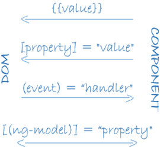
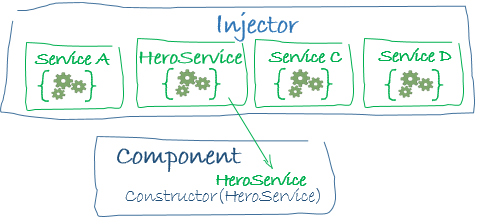

Angular 1 VS Angular 2
一次大跳跃
Angular 2和Angular 1之间有很多概念和语法上的改变，接下来我们从两个框架的以下方面进行对比:
开发语言(Language)
| Angular 1 | Angular 2 |
|---|---|
| ES 5 | ES 5 |
| Typescript | |
| Dart |
应用启动(Bootstrapping)
| Angular 1 | Angular 2 |
|---|---|
|
|
Angular 1中，我们通过ng-app指令启动应用，同时指定启动的模块（如movieHunter）；
而在Angular 2中没有启动指令，我们通过显示调用bootstrap函数来启动应用，将模块以参数的形式传递。
数据绑定(Data Binding)
| Binding | Angular 1 | Angular 2 |
|---|---|---|
| Interpolation | |
|
| Properties | |
|
| Events | |
|
| Two-way | |
|
Angular 2保留Angular 1中的单向绑定（花括号语法），又细分了属性绑定、事件绑定，修改了双向绑定的使用方式。
数据绑定(Data Binding)
- 对于单向绑定，我们仍然可以使用花括号（{{}}）表达式；
- 对于属性绑定，我们不再用ng-href、ng-src、ng-checked等指令，统一使用方括号（[]）表达式代替；
- 对于事件绑定，我们不再用ng-click、ng-change、ng-keypress等指令，统一使用括号（()）表达式代替；
- 对于双向绑定，我们仍然可以使用ngModel，只不过使用“香蕉”表达式（[()]，banana in a box，像个香蕉）。

控制器／组件(Controller/Components)
| Angular 1 | Angular 2 |
|---|---|
|
|
Angular 1
Angular 2
组件(Components)
 Angular 2没有了Angular 1中Scope、Controller的概念，Component中定义的属性、方法都以数据绑定的形式绑定到Component模版中。
Angular 2没有了Angular 1中Scope、Controller的概念，Component中定义的属性、方法都以数据绑定的形式绑定到Component模版中。
 Angular 2的应用，都是从一个根组件（Root Component）开始，最终，我们的应用能被抽象成一个个组件组成的树。
Angular 2的应用，都是从一个根组件（Root Component）开始，最终，我们的应用能被抽象成一个个组件组成的树。
指令(Template Directives)
| Angular 1 | Angular 2 |
|---|---|
|
|
|
|
|
|
|
|
指令(Template Directives)
- 原Angular 1的ng-href、ng-src、ng-checked等属性绑定指令，在Angular 2中统一使用方括号（[]）表达式代替；
- 原Angular 1的ng-click、ng-change、ng-keypress等事件绑定指令，在Angular 2中统一使用括号（()）表达式代替；
- 我们仍然可以使用ngModel进行双向绑定，只不过使用“香蕉”表达式（[()]）；我们仍然可以使用ngIf、ngClass等基础指令。
Angular 2将指令细分为“结构指令”（Structural directives），和“属性指令”（Attribute directives）。
- 像*ngFor、*ngIf等结构指令，会通过添加、删除、替换Dom元素来修改页面布局；
- 像ngModel等属性指令，会修改已有元素外观或行为。
过滤器/管道(Filters/Pipes)
| Angular 1 | Angular 2 |
|---|---|
|
|
在Angular 1中，我们可以使用“|”符号来过滤或转换数据的展现，比如在这个例子中，我们把title属性全部改成了大写。
在Angular 2中，仍然使用同样的语法，只不过在这里改了称呼，重新命名为“Pipe”。
依赖注入(Dependency Injection)
| Angular 1 | Angular 2 |
|---|---|
|
|

Angular 1中，我们可以在Controller等方法中通过名字注入依赖；
而在Angular 2中，我们需要在构造函数中，以参数的形式注入。
模块(Modules)
| Angular 1 | Angular 2 |
|---|---|
|
|
 在Angular 1中，我们通过定义模块，用来管理我们的Controllers、Services、Directives等；
在Angular 1中，我们通过定义模块，用来管理我们的Controllers、Services、Directives等；
而Angular 2没有自己的模块，而是使用ES 2015的模块系统，而ES 2015的模块系统是基于文件的，每一个文件就是一个模块。
One More Thing ... ...
根据官方说法，Angular 2比Angular 1有了极大的性能提升，而且学习资源也越来越丰富，下面贴两个教育资源地址。